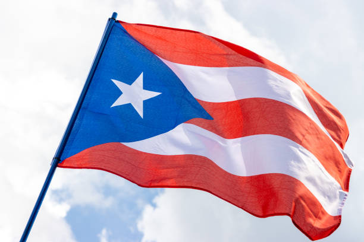
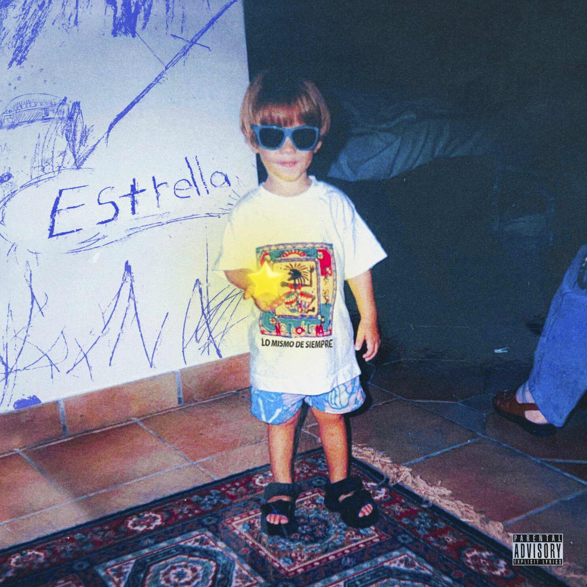

Originario de Bayamón (Puerto Rico), Gabriel se interesó por la música desde muy pequeño. A la corta edad de seis años comenzó a tocar la flauta y luego aprendió tocar el piano.
Estudió en una escuela elemental Montessori, cuyo enfoque es más en las artes que en estudios tradicionales. En su adolescencia practicó los deportes baloncesto y tenis en el Colegio San José en Río Piedras, pero nunca dejó la música. Estudió Administración de empresas en la Universidad de Puerto Rico, fue aceptado y dejó la carrera poco tiempo después. También asistió a Berklee College of Music, la cual al poco tiempo desistió.
Finalmente probaría suerte por cuenta propia en 2017, lanzando entonces sus primeras canciones.